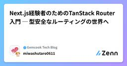

Gemcook Tech Blogのフィード
https://zenn.dev/p/gemcook
「好きな人を喜ばせるプロダクトを作る」をMissionに日々開発しています。モバイル/Webアプリの企画・UI/UX設計・開発・運用までサポート。TypeScript、React、React Native、Next.js、Hono、Go、AWS、Cloudflare、AI関連 ←
フィード

Next.js経験者のためのTanStack Router入門 ─ 型安全なルーティングの世界へ
Gemcook Tech Blogのフィード
みなさん、Reactアプリケーションのルーティングにはどのライブラリを使用していますか？Next.jsのファイルベースルーティングを利用している方が多いかと思いますが、最近注目されているルーティングライブラリとしてTanStack Routerがあります。TanStack Routerは、TanStack Query（旧React Query）やTanStack Tableなどを開発しているTanStackチームが提供する型安全なルーティングライブラリです。ファイルベースルーティング、検索パラメータの型安全な管理、自動コード分割など、モダンなReactアプリケーション開発に必要な機...
1日前
週刊Cloudflare - 2026/03/22週
Gemcook Tech Blogのフィード
こんにちは、あさひです 🙋♂️ 今週の Cloudflare のアップデートをまとめていきます！ この記事の主旨この記事では、前週に Cloudflare のサービスにどんな変更があったかをざっくりと理解してもらい、サービスに興味を持ってもらうことを目的としています。そのため、変更点を網羅することを優先します。 2026/03/15 ~ 2026/03/21 の変更 Wrangler 4.76.0マイナーアップデートwrangler containers list を Dash API エンドポイントに移行/dash/applications エン...
2日前

週刊Cloudflare - 2026/03/15週
Gemcook Tech Blogのフィード
こんにちは、あさひです 🙋♂️ 今週の Cloudflare のアップデートをまとめていきます！ この記事の主旨この記事では、前週に Cloudflare のサービスにどんな変更があったかをざっくりと理解してもらい、サービスに興味を持ってもらうことを目的としています。そのため、変更点を網羅することを優先します。 2026/03/08 ~ 2026/03/14 の変更 Wrangler 4.73.0マイナーアップデートwrangler containers ssh の SSH パススルーフラグを非推奨化--cipher、--log-file、--es...
9日前
jQuery 4.0がついにリリース！React・Vueと比較して見えてくる「今あえてjQueryを選ぶ理由」と「選ばない理由」
Gemcook Tech Blogのフィード
みなさん、jQuery使っていますか？「え、今さらjQuery？」と思った方も多いかもしれません。React や Vue が主流の今、jQueryという名前を聞くと少しノスタルジックな気持ちになる方もいるのではないでしょうか。しかし、2026年1月17日にjQuery 4.0.0が正式リリースされました。約10年ぶりのメジャーバージョンアップです。https://blog.jquery.com/2026/01/17/jquery-4-0-0/W3Techsの調査によると、2025年6月時点でjQueryは全Webサイトの約73.5%で使用されており、JavaScriptライブラ...
11日前
CSSだけでできるアクセシビリティ改善3選【やりがちなミスも解説】
Gemcook Tech Blogのフィード
前回の記事ではクリッカブルエリアの調整とprefers-reduced-motionを利用したアニメーションの制御について紹介しました。今回はその続編として、CSSを用いたアクセシビリティ対応のポイントをさらに3つ紹介します。https://zenn.dev/gemcook/articles/css-accessibility-tips :focus-visibleを使ったフォーカスインジケーターのカスタマイズキーボードでwebサイトを操作した時に、今どの要素にフォーカスが当たっているかわからなくなった経験はありませんか？フォーカスインジケーター（フォーカスリング）は、キーボ...
15日前
Claude Code 全社導入までの意思決定と歴史
Gemcook Tech Blogのフィード
はじめに「やばい、今すぐに意思決定をしないと取り残される」——そう感じたのは、このポストをきっかけに社長と話していた時でした。https://x.com/tsuchinao83/status/2021730479997956553?s=20社長に「Cursor・Windsurf・Claude Code、Devinとかとりあえず色々手を出して使ってるけど、社内のAIリテラシーを標準化して、メンバー全員がAIを等しく使えるくらいの環境を作っていかないと時代に取り残される。最新のツールへのチャレンジも必要だし、流行りがコロコロ変わる中での意思決定は難しいと思うが、全社導入を急いで欲し...
16日前
週刊Cloudflare - 2026/03/08週
Gemcook Tech Blogのフィード
こんにちは、あさひです 🙋♂️ 今週の Cloudflare のアップデートをまとめていきます！ この記事の主旨この記事では、前週に Cloudflare のサービスにどんな変更があったかをざっくりと理解してもらい、サービスに興味を持ってもらうことを目的としています。そのため、変更点を網羅することを優先します。 2026/03/01 ~ 2026/03/07 の変更 Wrangler 4.71.0マイナーアップデートHyperdrive で MySQL 固有の SSL モードとカスタム CA をサポートREQUIRED、VERIFY_CA、VERIF...
16日前
週刊Cloudflare - 2026/03/01週
Gemcook Tech Blogのフィード
こんにちは、あさひです 🙋♂️ 今週の Cloudflare のアップデートをまとめていきます！ この記事の主旨この記事では、前週に Cloudflare のサービスにどんな変更があったかをざっくりと理解してもらい、サービスに興味を持ってもらうことを目的としています。そのため、変更点を網羅することを優先します。 2026/02/22 ~ 2026/02/28 の変更 Wrangler 4.69.0マイナーアップデートcache 設定オプションを追加（実験的）cache.enabled: true を設定すると、Worker 実行前にキャッシュ動作が...
23日前
【React Tokyoフェス2026参加レポート】圧倒的な充実度とお祭り感！ オフラインの価値を実感した大満足の一日
Gemcook Tech Blogのフィード
はじめに2026年2月28日、東京都港区浜松町で開催された「React Tokyoフェス2026」に足を運びました。弊社がベーシックスポンサーとして協賛していることもあり、「せっかくなら行ってみようかな」という軽い気持ちで参加してみたのですが、予想以上に充実した時間を過ごすことができました。 広くシームレスな会場によるお祭り感会場は数百人規模のエンジニアを収容できる広さがあり、メインとなる大会場とその他のセッションエリアが物理的な壁なしにシームレスに繋がっています。「どこにいてもいい」「好きな場所で参加していい」という自由な雰囲気が全身に伝わってくる開放感とお祭り感があっ...
25日前
週刊Cloudflare - 2026/02/22週
Gemcook Tech Blogのフィード
こんにちは、あさひです 🙋♂️ 今週の Cloudflare のアップデートをまとめていきます！ この記事の主旨この記事では、前週に Cloudflare のサービスにどんな変更があったかをざっくりと理解してもらい、サービスに興味を持ってもらうことを目的としています。そのため、変更点を網羅することを優先します。 2026/02/15 ~ 2026/02/21 の変更 Wrangler 4.67.0マイナーアップデートwrangler pipelines setup にバリデーションリトライループを追加パイプライン名・バケット名・フィールド名のバリデー...
1ヶ月前
Slack投稿をGeminiやNotebookLMに渡して好きに活用したい
Gemcook Tech Blogのフィード
はじめに最近は日々、AI の便利な活用術が SNS や記事で紹介されていますね。私も何か面白い活用術を見つけられないかと考えていたところ、ふとひらめきました。Slack の投稿を、そのまま Gemini や NotebookLM に渡せたら便利そうだなと。実際にやってみた結果がこちらです。Slack のスレッドを画像付きで読み込み要約する Geminiなんと画像内の文字まで拾って、いい感じにサマリを作ってくれました。「これ、もしかして…… かなり便利なのでは？」ネタバラシをすると、やっていることはとても単純です。GAS で Slack の投稿を Google ドキュ...
1ヶ月前
TanStack Startとは？Next.jsに代わるフルスタックReactフレームワークを紹介
Gemcook Tech Blogのフィード
はじめにみなさん、Reactでフルスタックなwebアプリケーションを開発する際にどのフレームワークを使用していますか？Next.jsを利用している方が多いかと思いますが、最近注目されているフレームワークとしてTanStack Startがあります。TanStack Startは、TanStack Query（旧React Query）やTanStack Routerなどを開発しているTanStackチームが提供するフルスタックReactフレームワークです。ViteとTanStack Routerをベースに構築されており、SSR、ストリーミング、サーバー関数、APIルートなど、...
1ヶ月前
週刊Cloudflare - 2026/02/15週
Gemcook Tech Blogのフィード
こんにちは、あさひです 🙋♂️ 今週の Cloudflare のアップデートをまとめていきます！ この記事の主旨この記事では、前週に Cloudflare のサービスにどんな変更があったかをざっくりと理解してもらい、サービスに興味を持ってもらうことを目的としています。そのため、変更点を網羅することを優先します。 2026/02/08 ~ 2026/02/14 の変更 Wrangler 4.65.0マイナーアップデートwrangler pages dev に Pages 固有の環境変数を自動注入CF_PAGES、CF_PAGES_BRANCH、CF_...
1ヶ月前
Claude Codeの個人設定を.git/info/excludeでチームに影響させずに管理してみた
Gemcook Tech Blogのフィード
はじめにClaude Codeを使っていると、自分専用のコーディング規約（CLAUDE.local.md）や、作業効率化のための自作コマンド（Custom Commands / Skills）を追加したくなることがあります。これらをリポジトリ内に追加すると、自分の個人設定ファイルが「未追跡のファイル」としてGitの差分に表示されてしまいます。これらをコミット対象に含めず、管理する方法をご紹介します。 問題： .gitignoreではファイルの存在が検知されてしまう「追加したCustom CommandsやSkillsディレクトリやファイルを追加したことをGitから追跡され...
1ヶ月前
週刊Cloudflare - 2026/02/08週
Gemcook Tech Blogのフィード
こんにちは、あさひです 🙋♂️ 今週の Cloudflare のアップデートをまとめていきます！ この記事の主旨この記事では、前週に Cloudflare のサービスにどんな変更があったかをざっくりと理解してもらい、サービスに興味を持ってもらうことを目的としています。そのため、変更点を網羅することを優先します。 2026/02/01 ~ 2026/02/07 の変更 Wrangler 4.63.0マイナーアップデート実験的ローカルリソースエクスプローラーにホットキーを追加wrangler dev 実行中に e キーで Local Explorer U...
1ヶ月前
React Hook Formしか使ってこなかった人のためのTanStack Form
Gemcook Tech Blogのフィード
はじめにReactのフォームライブラリといえば、多くの人がReact Hook Formを使ってきたと思います。自分もこれまで、Web / React Native問わず、フォームはほぼReact Hook Form一択で実装してきました。そんな中、TanStack Formという名前を見かけるようになり、「正直React Hook Formで困ってないんだよな」と思いつつも、気になって触ってみたのがきっかけです。この記事では、TanStack Formはどんなライブラリなのか、どんな機能があり、何ができるのかをコードを交えながらReact Hook Formユーザー...
2ヶ月前
週刊Cloudflare - 2026/02/01週
Gemcook Tech Blogのフィード
こんにちは、あさひです 🙋♂️ 今週の Cloudflare のアップデートをまとめていきます！ この記事の主旨この記事では、前週に Cloudflare のサービスにどんな変更があったかをざっくりと理解してもらい、サービスに興味を持ってもらうことを目的としています。そのため、変更点を網羅することを優先します。 2026/01/25 ~ 2026/01/31 の変更 Wrangler 4.61.1パッチアップデートDurable Objects のマイグレーション警告メッセージを修正マイグレーション未定義時の案内で new_classes ではなく n...
2ヶ月前
週刊Cloudflare - 2026/01/25週
Gemcook Tech Blogのフィード
こんにちは、あさひです 🙋♂️ 今週の Cloudflare のアップデートをまとめていきます！ この記事の主旨この記事では、前週に Cloudflare のサービスにどんな変更があったかをざっくりと理解してもらい、サービスに興味を持ってもらうことを目的としています。そのため、変更点を網羅することを優先します。 2026/01/18 ~ 2026/01/24 の変更 Wrangler 4.60.0マイナーアップデートシェル補完スクリプトを生成する wrangler complete コマンドを追加bash / zsh / fish / PowerShe...
2ヶ月前
RDB脳の私が、DynamoDBの「読めないデータの羅列」を「構造」として理解できるまで
Gemcook Tech Blogのフィード
1. はじめにこの記事は、RDBしか使ったことがなかった自分が、実務で初めてNoSQLの代表のひとつであるDynamoDBのテーブルを目の当たりにし、「なぜ1テーブルなのか」「なぜこんなにスカスカなのか」と戸惑いながら、その理由を実装や設計を通して少しずつ理解していった体験をまとめたものです。当時感じていた違和感や思考の変化を軸にしつつ、途中で腹落ちしたPKやSK、GSIといった設計の考え方については、具体的なテーブル例を使って整理しています。 想定読者RDBの経験はあるが、DynamoDBは初めてJOIN・正規化・インデックスの概念は理解しているDynamoDBのキ...
2ヶ月前
週刊Cloudflare - 2026/01/18週
Gemcook Tech Blogのフィード
こんにちは、あさひです 🙋♂️ 今週の Cloudflare のアップデートをまとめていきます！ この記事の主旨この記事では、前週に Cloudflare のサービスにどんな変更があったかをざっくりと理解してもらい、サービスに興味を持ってもらうことを目的としています。そのため、変更点を網羅することを優先します。 2026/01/11 ~ 2026/01/17 の変更 Wrangler 4.59.2パッチアップデートminiflareとwranglerの依存関係を更新workerd を更新1.20260111.0 -> 1.20260114....
2ヶ月前